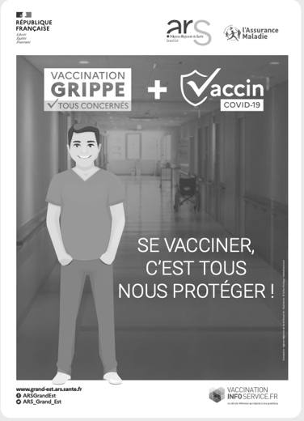

Cours standard adapté : mêmes objectifs que le programme CAP, textes courts, questions guidées, indices, corrigés, explications concrètes et audio sur les blocs.
3 séancesAudio sur les blocsRéponses guidéesExemples concrets
Mode d’emploi accessible
Lire dans l’ordre. Chaque document est suivi de ses questions. Les images aident à comprendre, mais le texte suffit pour répondre.
Utiliser les aides. Ouvrir l’indice pour démarrer, le corrigé pour vérifier, puis l’explication pour comprendre avec un exemple concret.
Séance 1 — Les visites médicales au travail
Objectif. Identifier les visites médicales et le rôle du suivi individuel.
Compétences :C1
Traiter l’information : repérer une information utile dans un document.
C2
Analyser une situation : comprendre le problème, les personnes concernées et les causes possibles.
C3
Mettre en relation : faire le lien entre une information du document et une connaissance du cours.
Situation — Ilyan commence son apprentissage

La vaccination fait partie des moyens de prévention.
Ilyan entre en apprentissage dans une entreprise. Il reçoit une convocation pour une visite avec le service de prévention et de santé au travail. Il se demande si cette visite sert à le juger ou à le protéger.
1. À partir de la situation,
1.1C2Identifier l’objectif principal de la visite.
Indice
Chercher le lien entre santé et poste de travail.
Corrigé
La visite sert à prévenir les risques et suivre la santé au travail.
Explication
Exemple : la visite peut permettre de repérer un besoin d’aménagement avant qu’un problème de santé ne s’aggrave.
1.2C5Expliquer pourquoi cette visite protège Ilyan.
Indice
Penser aux risques du poste et aux conseils possibles.
Corrigé
Elle protège Ilyan car elle permet de l’informer sur les risques et d’adapter le suivi à son poste.
Explication
Exemple : si Ilyan est exposé à un bruit important, le professionnel peut insister sur la protection auditive.
Document 1 — VIP et suivi renforcé
La visite d’information et de prévention informe le salarié sur les risques du poste et le sensibilise aux moyens de prévention.
Certains postes exposent à des risques particuliers. Dans ce cas, le salarié peut bénéficier d’un suivi individuel renforcé avec un examen médical d’aptitude.
2. À partir du document 1,
2.1C1Distinguer VIP et suivi individuel renforcé.
VIP
Suivi individuel renforcé
Indice
La VIP informe et prévient ; le suivi renforcé concerne les postes à risques particuliers.
Corrigé
VIP : information et prévention. Suivi renforcé : postes à risques particuliers et aptitude médicale.
Explication
Exemple : un poste exposé à certains risques chimiques peut demander un suivi renforcé.
2.2C1Relever deux informations données lors de la VIP.
Indice
Chercher ce que le salarié apprend pendant la visite.
Corrigé
Risques du poste, moyens de prévention, suivi nécessaire.
Explication
Exemple : savoir quand porter une protection aide à éviter une exposition dangereuse.
Je retiens. Le suivi médical au travail a un but préventif : informer, surveiller et adapter le travail si nécessaire.
Séance 2 — Comprendre la vaccination
Objectif. Comprendre le rôle des antigènes, des anticorps et de la mémoire immunitaire.
Compétences :C1
Traiter l’information : repérer une information utile dans un document.
C3
Mettre en relation : faire le lien entre une information du document et une connaissance du cours.
Document 2 — Le principe de la vaccination
Un vaccin présente à l’organisme un élément reconnu comme étranger, appelé antigène, sans provoquer la maladie visée. Le système immunitaire fabrique des défenses, notamment des anticorps.
Après la vaccination, certaines cellules gardent une mémoire. Si le vrai micro-organisme est rencontré plus tard, la réponse immunitaire peut être plus rapide.
1. À partir du document 2,
1.1C3Associer les mots à leur rôle.
Élément
Réponse
Antigène
Anticorps
Mémoire immunitaire
Indice
Se demander si le mot désigne ce qui est reconnu, la défense ou le souvenir immunitaire.
Corrigé
Antigène : élément étranger. Anticorps : défense. Mémoire immunitaire : réponse plus rapide ensuite.
Explication
Exemple : l’organisme apprend à reconnaître un microbe avant d’être confronté à la maladie.
1.2C5Expliquer pourquoi la vaccination est une prévention.
Indice
Montrer qu’elle agit avant la maladie.
Corrigé
La vaccination est une prévention car elle prépare les défenses de l’organisme avant la rencontre avec le micro-organisme.
Explication
Exemple : se vacciner contre le tétanos prépare le corps à réagir si une blessure expose à la bactérie.
Document 3 — Vaccination et travail
Selon les métiers, certains vaccins peuvent être recommandés ou obligatoires. Les professionnels exposés à du sang, à des agents biologiques ou à des publics fragiles doivent être particulièrement attentifs à leur protection vaccinale.
Le carnet de vaccination permet de vérifier les rappels.
2. À partir du document 3,
2.1C1Relever deux situations où la vaccination est importante au travail.
Indice
Chercher les expositions ou les publics concernés.
Corrigé
Exposition au sang, agents biologiques, publics fragiles.
Explication
Exemple : en soin ou aide à la personne, protéger sa vaccination peut aussi protéger les personnes accompagnées.
2.2C4Proposer une action si Ilyan ne sait pas où il en est.
Indice
Penser à un document ou à un professionnel de santé.
Corrigé
Consulter son carnet de vaccination et demander conseil à un professionnel de santé.
Explication
Exemple : vérifier un rappel évite de croire qu’on est protégé alors que la protection n’est plus à jour.
Je retiens. La vaccination prépare les défenses de l’organisme. Au travail, elle dépend des expositions et des recommandations.
Séance 3 — Agir pour sa santé au travail
Objectif. Identifier les bons interlocuteurs et les actions de prévention.
Compétences :C2
Analyser une situation : comprendre le problème, les personnes concernées et les causes possibles.
C4
Proposer une solution : choisir une action adaptée à une situation.
C6
Communiquer : présenter une réponse claire avec le vocabulaire attendu.
Document 4 — Quand demander conseil ?
Un salarié peut demander conseil au service de prévention et de santé au travail s’il a une question sur les risques du poste, une gêne liée au travail, une exposition particulière ou un besoin d’aménagement.
Le suivi médical respecte la confidentialité des informations de santé.
1. À partir du document 4,
1.1C4Choisir deux situations où demander conseil.
Indice
Choisir les situations liées à la santé ou aux risques du travail.
Corrigé
Douleur au poste, exposition biologique, besoin d’aménagement.
Explication
Exemple : une douleur qui revient pendant une tâche peut justifier un conseil avant qu’elle ne devienne chronique.
1.2C6Rédiger une phrase pour demander un avis.
Indice
Dire le problème, le poste et ce que l’on demande.
Corrigé
Exemple : “Je ressens une douleur au poignet quand je répète ce geste ; je voudrais savoir si mon poste peut être adapté.”
Explication
Exemple : une demande précise aide le professionnel à comprendre la situation réelle de travail.
Je retiens. Le suivi médical au travail aide à prévenir, conseiller et adapter. Il ne remplace pas le médecin traitant, mais il protège la santé au poste.
Bilan final — Je vérifie mes connaissances
Lexique
VIP visite d’information et de prévention.
SIR suivi individuel renforcé pour certains postes à risques.
Antigène élément reconnu comme étranger par l’organisme.
Anticorps défense fabriquée par l’organisme.
Mémoire immunitaire capacité à réagir plus vite après une première rencontre.
Carnet de vaccination document qui suit les vaccins et rappels.